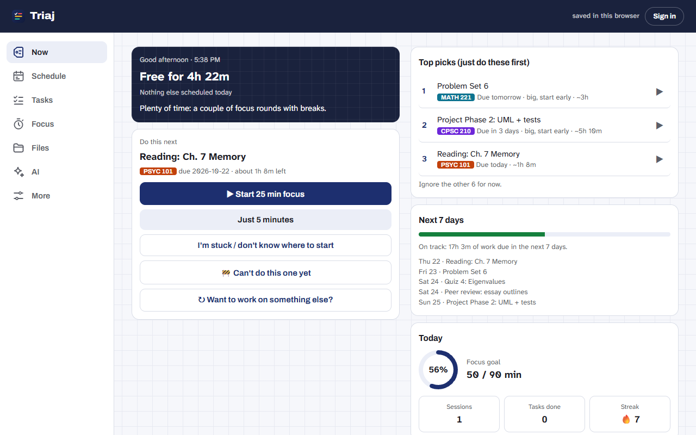
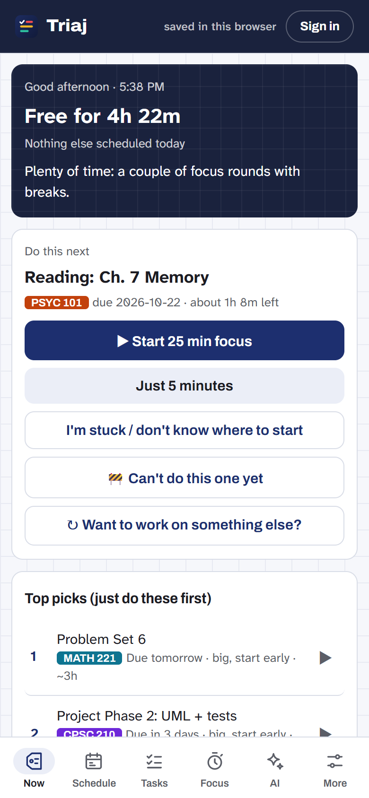

Know what to do next.
Triaj reads everything due in Canvas, sorts it into what needs you now, what's coming up, and what can wait, then plans when you'll actually work on each one around your classes.
Free. Sign in with Google or email and it's the same planner on your phone, laptop and any browser.
Now
Soon
Later


What it handles for you
- Canvas, without copying anything
- Assignments, quizzes (even locked ones), discussions, peer reviews and exam dates arrive on their own. Changed due dates update, and work you submit gets checked off.
- When to work, not just what's due
- Give it your class times and how fast you work. It fills the gaps in your week with study blocks, starts big things early, and leaves in-class quizzes alone.
- A focus timer that keeps you there
- Pomodoro, deep work or your own timings, with gentle nudges and brown or pink noise. With the companion it counts down on your toolbar and keeps YouTube, Reddit and anything else you list out of reach until your break.
- Help when you're stuck
- Ask the AI to plan your week, turn a sentence into tasks, or pull exam dates out of a syllabus PDF. It suggests; nothing changes until you press Apply. Free with your own Gemini key.
- Things that can't start yet
- Mark a task as waiting on another one, or on something like "partner sends data". It comes back on its own when it's ready.
- Course files, in folders
- Download every PDF and slide deck for a course, or just what one assignment needs, into Downloads/Canvas/course/module. It remembers what changed since last time.
Put it on your phone
Triaj installs like an app: its own icon, full screen, works offline. Your tasks are already there when you sign in.
- iPhone and iPadOpen Triaj in Safari, tap Share, then Add to Home Screen.
- AndroidOpen Triaj in Chrome and tap Install when it asks, or menu, then Install app.
- ComputerClick the install icon at the end of the address bar in Chrome or Edge.
The companion extension
Browsers won't let a website read your Canvas with your sign-in, which is a good rule. So on your computer, a small extension does exactly the parts a website can't: Canvas and private calendar sync, the toolbar timer, site blocking, and saving course files. It never stores your planner, and it only reads sites you allow.
Download the companion- Unzip
triaj-companion.zipinto a folder you'll keep, like Documents. - Open
chrome://extensions(oredge://,brave://,opera://extensions) and turn on Developer mode. - Press Load unpacked and choose that folder. Pin the Triaj icon so the timer is one click away.
- In Triaj, open More, then Sync, enter your Canvas address and press Connect.
- Unzip
triaj-companion.zipinto a folder you'll keep. - Open
about:debugging#/runtime/this-firefoxand press Load Temporary Add-on, then choosemanifest.jsonin that folder. - In Triaj, open More, then Sync, and press Connect.
- Firefox removes temporary add-ons when it quits. Firefox Developer Edition can keep it: set
xpinstall.signatures.requiredto false inabout:config, then install the zip from the add-ons page.
Your data stays yours
Your planner, and any Canvas token or AI key you add, is stored in your own account and only you can read it. There are no ads, analytics or trackers. Canvas data goes from Canvas to your browser to your account. AI requests go straight from your browser to the provider you pick. Without an account, everything stays in that one browser.